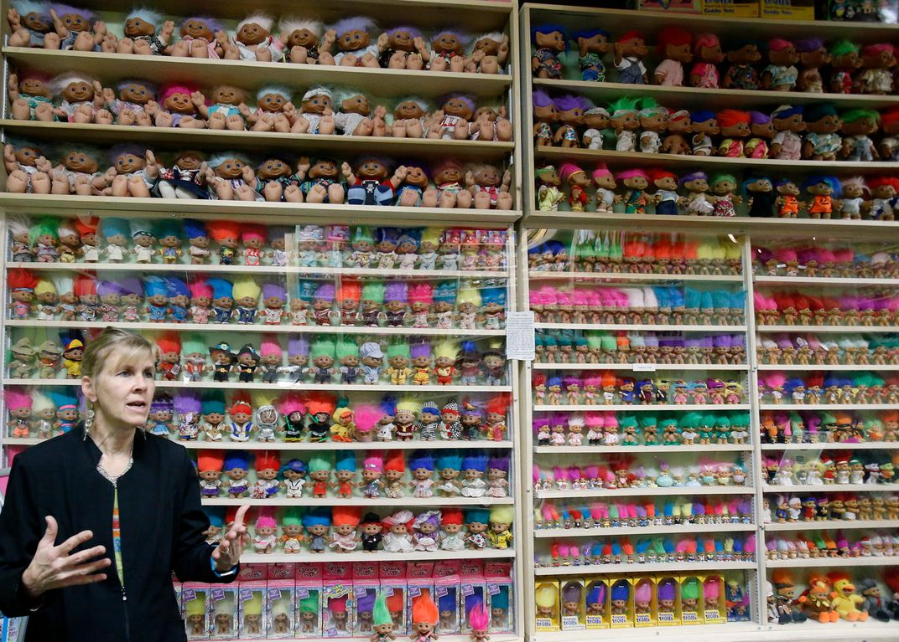
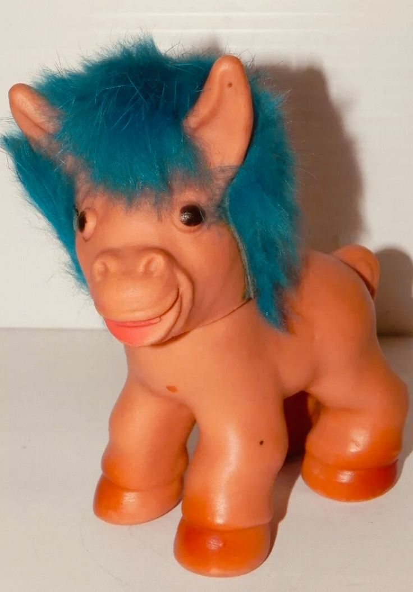
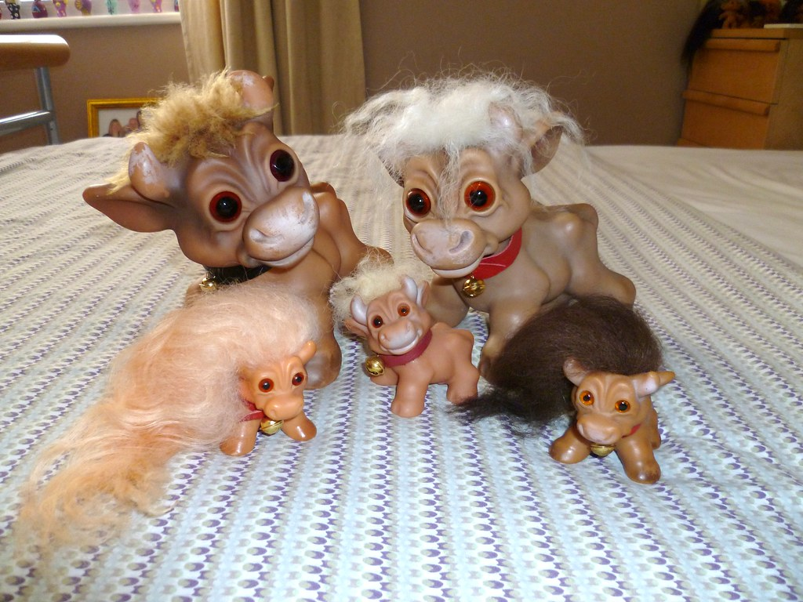

Troll Dolls are immensely popular with collectors and have been since their creation in the 1960s. These toys created a fad in the '60s, '70s, and '90s.
With the release of the "Trolls" movie in 2016, their popularity is on the rise once again.
Serious troll collectors often specialize in Dam and non-Dam varieties alike.
In New York City, an artist named Reverend Jen Miller famously turned her apartment's living room into the Lower East Side Troll Museum, sharing her collection of 400 trolls with visitors by appointment.
Miller put her trolls in storage when she was evicted in 2016 and has since brought them out for pop-up exhibits, including New York's Outsider Art Fair in 2019.
In 2013, collector Ray Dyson, based in Edmonton, Canada, secured the Guiness World Record for his collection of more than 4,000 trolls.
In 2018, Dyson was usurped by collector Sherry Groom, a retired psychiatric nurse, who has an astonishing 8,130 troll dolls and remains the world record holder today.
Troll fans can visit Groom's collection in Alliance, Ohio, where she and her husband run the Troll Hole, a two-story museum that displays an additional 22,000 pieces of troll-related memorabilia.
Groom began collecting as a child during the 1960s, when family members and friends gifted her trolls. Then, as troll dolls' popularity ebbed after the 1990s boom, she found opportunities to purchase secondhand collections of 300 to 500 troll dolls at a time.
“I always try to convince people on the tour that I'm not a creepy troll collector,” Groom says, laughing. “I just happened to have some, and then we monetized it, and then it really took on a life of its own.”
The prices on trolls range from only a few dollars for late, common Russ trolls, to more than $200 for rare 1960s Dam Things animal trolls (such as giraffes and lions).
Smaller, more common animals can be found for $25 to $50. Non-Dam troll animals can be much cheaper, especially if their tags are not attached.
Small 1960s trolls can be found for prices ranging from $15-$30.
Certain rare, vintage Nyform trolls from Norway can bring more than $500 as can rarer large more than 12-inch Dam trolls from the 1960s.
Remember, though, not all trolls are valuable today. They were produced in the hundreds of millions, and only mint and rare trolls bring high prices. A collection of trolls, however, can fit in nicely with either a collection of dolls or a collection of toys. If so, you should know what to expect when selling a doll collection. In any event, just looking at a troll can bring a wave of nostalgia for the 1960s or 1970s, when trolls seemed to be taking over the universe.